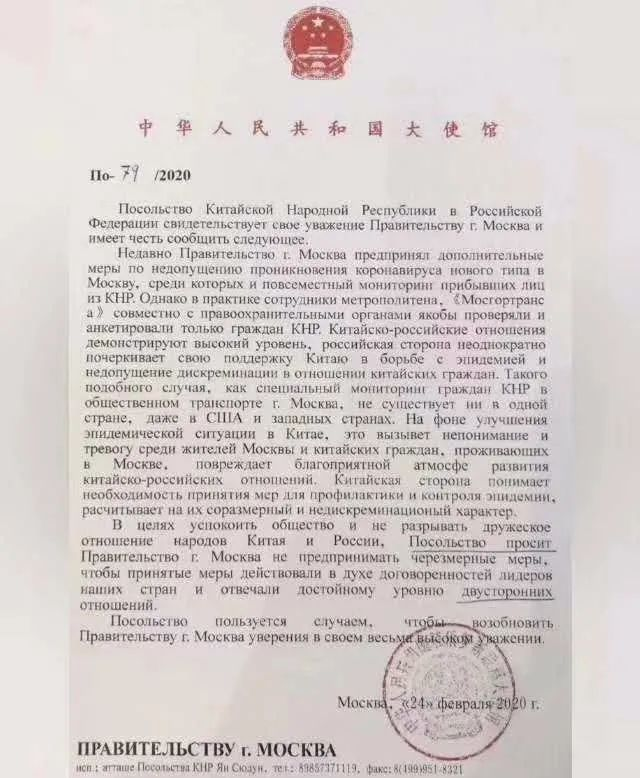
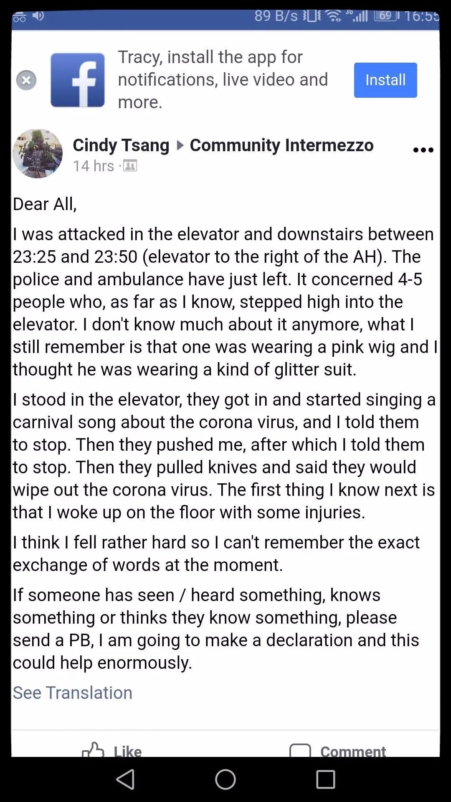
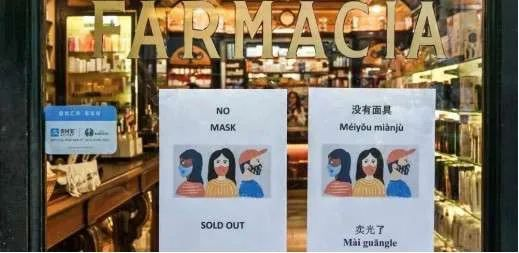
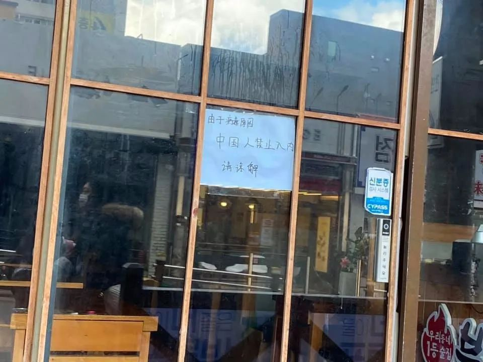

确诊人数暴增，韩国人终于戴起了口罩
原文链接 备份链接 截至今天（2月28日）16时，韩国确诊新冠肺炎感染者的总数已经升至2337人，单日累计确诊新增571例感染者，再次刷新韩国出现新冠病毒以来单日新增确诊感染者人数最大值。 一位在韩国处于居家隔离期的中国留学生为《人物》 …
记者/颜星悦
编辑/石爱华 宋建华

莫斯科谢列梅捷沃国际机场一名乘客戴着防护口罩站在售票处
2月26日，新冠肺炎疫情在世界范围内出现了一个意外“拐点”。根据世卫组织的数据，中国境外新增病例首次超过中国（中国411例，世界其它国家和地区427例），其中韩国、伊朗、意大利北部等地区出现疫情激增现象。
由于人们对病毒传播的未知、恐惧和误会，一些旅居国外的华人被贴上“新冠肺炎”的标签，面对着被歧视的目光。有些人像害怕病毒一样与中国人保持着“安全距离”，外媒把这种心理和行为称为“恐华症”或“恐中症”。
比起在当地扎根的华人华侨，“漂”在国外的留学生群体感受到的“恐华症”更明显。深一度记者采访了四名分别在俄罗斯、荷兰、意大利和韩国留学的中国学生，他们有人被请进过“小黑屋”，有人在公共场所被直呼“冠状病毒”，也有人改变了人生选择。
在意大利留学的中国学生余婕可以理解新冠肺炎带来的“距离感”，但她认为，种种预防措施不应该只针对中国人进行，她试图向身边的人解释，“感染病毒的不只中国人，每一个人都该做好防范”。

中国驻俄大使馆向莫斯科政府递交照会

莫斯科的“硬核管理”
截至目前，俄罗斯报出5例新冠肺炎确诊病例，其中2人已康复。疫情发生后，俄当局采取了严格的防疫措施。2月18日，俄罗斯政府主管卫生事务副总理戈利科娃宣布，“2月20日起禁止所有中国公民因工作旅行、私人旅行、教育或观光目的，从俄罗斯边界入境。”
据俄罗斯体报道，莫斯科官员命令警察搜查旅店、宿舍、公寓楼和商店以“追查”中国人，并在莫斯科的公交车、地铁和电车等公共交通上，利用人脸识别技术追踪中国人动态。
周云婷是被“追踪”的中国人之一，她在莫斯科一所大学里读大三，在搭乘地铁时被俄罗斯警察带进了“小黑屋”问话。
2月24日，周云婷从学校附近搭乘地铁到红场办事，进站刷卡时，几名警察走过来要求查看她的证件，并未解释原因。周云婷按照要求出示了护照、签证和移民卡。随后，她被带到地铁站里一个封闭的房间内。
“先要通过一扇密码门，之后穿过一条昏暗的走廊，房间在走廊尽头。”周云婷回忆，房间没有窗户，只有一张桌子和一条长凳，她被安排在长凳上坐下。“长凳旁边，是那种关押犯人的小隔间。”
警察把周云婷的信息输入电脑，然后向她问话，“内容包括什么时候到的莫斯科，去了哪里，有没有回过中国，然后给我拍了照。”
这不是周云婷第一次被警方拍照，从2月22日到2月25日，周云婷在不同的地方一共被拍过4次照片。2月22日中午，警察来到学校，召集所有中国学生，在寝室楼下逐个拍照、登记证件，这是周云婷第一次登记拍照。
2月24日，周云婷在地铁站的房间经历了第二次拍照，她在“小黑屋”里等待了二十分钟才被允许离开。当天，她在红场出站的时候，又被警察叫住登记、拍照。2月25日中午，警方再次来到学校，给中国留学生拍照。
“莫斯科政府正在使用大数据技术，我们每个人（中国人）被拍了照后，通过街上的摄像头，我们的行踪就能被看到。”周云婷告诉记者。
事实上，周云婷从2019年8月底到莫斯科后，从未回过中国，“寒假去了摩洛哥和摩尔曼斯克游玩，这些警方都有记录。”周云婷觉得自己还算幸运，她的一个朋友，在地铁上被查证件后，直接被送到了医院强制隔离。“我的两个室友，春节回家过年，目前已经无法入境回来上学了。”
周云婷所在学校，中国学生都被要求隔离，周云婷也不得不搬去一个新的空宿舍，不管是否在疫情期间回过中国，每个中国学生都要在下午4点去宿管处量体温。
受影响的还有正常上课。周云婷介绍，从这个学期开始，中国学生去教学楼上课，必须在教学楼偏门测量体温后才能进入，“我们有电子卡，本来一刷就进去，现在中国学生的电子卡都失效了。”
周云婷说，这些措施针对的只有中国人，俄罗斯本地人和其他国家的人并没有受到任何管理。
2月24日，中国驻俄使馆向莫斯科市政府递交照会称：中方注意到莫斯科公交、地铁和部分执法机构以防控新型冠状病毒为理由，有针对性地只对华人进行检查，要求填表等举动，类似现象在美国和其他西方国家都是没有的。中方理解抗疫措施的必要性，但考虑中俄高度友好关系，希望市政府采取“适度、非歧视”的措施。

荷兰华裔女生在电梯里阻止当地人哼唱辱华歌曲后被捅伤，她在脸书上发布了情况说明
被直呼“病毒”的荷兰留学生
彭莉珍在荷兰鹿特丹伊拉姆斯大学读书，2018年来到荷兰之后，彭莉珍从未受到过任何不公正对待，可最近情况发生了变化。
2月20日下午1点左右，彭莉珍在鹿特丹Schenkel地铁站附近走路，一个四五十岁的男人突然迎面走来，“他看见我就对着我吼corona corona, 然后还说了几句荷兰语，语气很凶，我听不懂，听到他叫我corona（冠状病毒）才知道他是在用语言攻击我。”
彭莉珍还没有来得及做出反应，这名男子就转身走了。不久前，彭莉珍在学校华人学生会里听说过类似的事情，“地铁里有一些荷兰人，看到中国人就吼他们，很多同学都遭遇过这样的事情，还有同学被打。”
彭莉珍也在蒂尔堡大学念过书，她听同学说，一名华裔女生因为在电梯里劝阻别人唱辱华歌曲挨了刀子。“她被人拿东西砸破了头，流了很多血，然后有人拿刀划开了她的肚子。”
据荷兰RTL新闻报道，这位华裔女生24岁，名叫Cindy。Cindy Tsang事后在自己的Facebook上发表声明称：“我站在电梯里，他们走了进来，开始唱一首关于冠状病毒的狂欢节歌曲，我叫他们停下来，然后他们推我，拔出刀子说他们会消灭冠状病毒。”
在电梯里引发Cindy不适的歌曲叫做《Voorkomen is beter dan Chinezen》，被改编的歌词写道：“都是臭气熏天的中国人的错”、“不要吃中国菜，否则你会感染冠状病毒。”
虽然荷兰目前只有一人确诊，但彭莉珍还是感受到了周边人态度的变化。前两天，她还遇到一个喜欢中国文化的荷兰人，他在地铁上用中文跟彭莉珍聊天，说为中国的疫情感到难过。“但我们两个在说中文的时候，旁边就有人拿手机拍我们，我不知道这是为什么。”
彭莉珍说，虽然这只是一小部分人，但她还是很难过。

境外也出现了“口罩荒”
一天三次遭遇不公正对待
相比荷兰，意大利的“恐华”情绪更加明显。
截止至2月28日15时，意大利共有655人确诊新型冠状病毒肺炎，45人死亡，已经成为亚洲以外感染人数最多的国家。而在21日之前，意大利仅有3例确诊。
疫情来势汹汹，意大利民众陷入空前恐慌，多地超市出现抢购潮，大批民众前往超市购买食物、消毒用品、口罩等，大部分超市货架基本都被清空。
在对病毒的恐慌中，一些意大利人把“攻击”目标对准了中国人。正在意大利佩鲁贾外国人大学读书的中国学生余婕（化名）告诉记者，在过去两天，她遭遇了四次不公平对待，其中同一天就有三次。
2月23日下午，余婕和另外两名中国学生在住所附近超市排队结账。等待期间，余婕和同学们用中文探讨晚上的菜单。“前面一个四十多岁的妇女突然就转过来，隔着三、四米让我们离远一点，不要说话，还对我们做出快走开的手势。” 余婕说。
这是余婕第一次在意大利受到当地人的“排挤”，她立刻进行了反驳，告诉这位阿姨，新冠病毒带来的危害不分国籍，不能只针对中国人，意大利人也需要带口罩。余婕希望自己的解释可以缓解误会。“但对方并不耐烦，让我们不要再说了。”
余婕还没有从超市事件的“阴影”中走出来，第二天类似事件接踵而至。2月24日中午下课，余婕和中国同学一起在食堂吃饭，一个意大利男学生坐在他们身后，对他们比划出侮辱性的手势。
当天放学后，余婕和朋友决定去超市多采购一些食物。在翁布里亚区的Pincetto地铁站，余婕和朋友们正要进站，两个走在前面的意大利中年女人突然说：“ 有中国人。” 说完之后立马走远。
走进地铁车厢的时候，两名意大利女子再次出现，她们对车厢里的乘客大声说：“不要坐这一班车，他们是中国人，快点离他们远一点。” 令余婕安慰的是，大多数乘客没有理会。
在从超市回寝室的路上，余婕遇到四五个意大利年轻人，有男有女，说说笑笑。他们看到余婕就说，“中国人！病毒！”一边说着，还向余婕和朋友们比出中午食堂里看到的手势。
余婕说，大多数意大利人还是善解人意的，对于这些不友好的行为，“一开始是气愤，到现在是难过。”
余婕和朋友们最近都特别想回家。她已经查了机票，但是由于意大利已经停止了对中国的商业航班往来，一直到五月份都没有回国的机票可以买。

韩国个别商店贴出“中国人禁止出入”
她往前走 房东往后退
除中国外，韩国已经成为新冠肺炎疫情的第二大战场。2月28日，韩国新冠病毒病例升至2022人。
关静怡在韩国读书，是中国香港人。2019年12月24日她放假回国，假期期间，她曾到苏州游玩，元旦前夕返回香港， 2月22日关静怡回到韩国。
在入境韩国时，海关让她上报手机号。关静怡了解，从2月12日开始，每个中国入境者需安装“自我诊断APP”，主动申报健康状况，关静怡也被要求下载了这个应用软件。
“页面上有一个表格，需要自己填写是否有发烧等不适症状，每天提交。”关静怡听说，如果不提交的话，会有人“找上门”。
韩国中央应急处置部发布的通知要求：中国入境者每天早晨10点都会收到“输入自我诊断信息”的提醒，如果忘记输入的话，将在同一天下午2点到4点接到追加输入的通知，如果多次拒不输入的话，韩国防疫部门将会进行电话联络，韩国警察厅也将采取相应措施。
2月22晚上8点，回到韩国的关静怡准备出门采购，在公寓楼下，关静怡遇到了房东。当时，房东正在大门口清理垃圾，“他见到我皱起眉，我跟他打招呼，他看见我向他走过去，结果他直往后退。“
“房东是一个六七十岁的韩国大叔，平时是很热情的那一种。” 关静怡用敬语客气地打招呼，房东却问她：“你们中国人把病毒传到韩国来，你们难道没有想过要怎么去处理吗？” 关静怡注意到，房东跟她说话时没有用敬语，语气也很差。在这之前，他们都是互相用敬语称呼的。
关静怡还没有想好怎么回答，房东就让她赶紧离开。
关静怡还发现，如果走在街上用中文说话，周围的韩国人就会投来异样目光，有些人还会躲开。回到住处后，关静怡开始在宿舍自我隔离，满14天后，她将拿到一个隔离证明回到学校上课。
韩国人在光华门集会那天，关静怡在微信朋友圈里密切关注着动向，她看到有一些人举着牌子，上面写着“China Out”。关静怡还发现，在一些便利店的门外，贴着“中国人不准进”的标语，最近有一些朋友去餐厅吃饭，也被服务员拒绝进门。她很是担心，3月份开学之后，会遭到同学的排挤。
最近发生的事情让关静怡重新规划了未来的工作计划，“我原本打算，韩国或中国哪边有合适的机会就留在哪边，现在我还是想要回国”。
（为保护采访对象隐私，文中周云婷、余婕为化名）
**【反侵权公告】本文由北京青年报在腾讯新闻独家首发，未经授权，不得转载。**


3例病理解剖初步诊断完成 死者肺部有黏液性分泌物| 深度报道
 不想成为英雄，只是想不被绝望困住|深度报道
不想成为英雄，只是想不被绝望困住|深度报道

送别李文亮医生：愿天堂没有病毒| 深度报道


原文链接 备份链接 截至今天（2月28日）16时，韩国确诊新冠肺炎感染者的总数已经升至2337人，单日累计确诊新增571例感染者，再次刷新韩国出现新冠病毒以来单日新增确诊感染者人数最大值。 一位在韩国处于居家隔离期的中国留学生为《人物》 …
原文链接 备份链接 韩国1月20日发现首例确诊病例，此后一个月疫情发展缓慢，到2月18日确诊31例。2月19日后突然暴增，一周新增超过1200例。 18日确诊的第31号患者，被视为“超级传播者”。 韩国新冠疫情的一大特征是，在特定群 …
原文链接 备份链接 据2月26日韩国中央防疫的通报， 韩国新冠肺炎确诊病例总数达到1261例， 死亡12例。 在短短不到一周内，韩国新冠疫情井喷式爆发， 在疫情最严峻的大邱市， 当地民众排千米长队买口罩。 回头看5年前， 2015年5月 …
原文链接 备份链接 青岛、威海等城市并未出现传闻中“大批韩国人来华躲避疫情”的现象，但山东各地已经相继采取措施，防止在韩国愈演愈烈的疫情波及山东半岛 文 |《财经》记者 马霖 杨立赟 陈亮 吴琼 编辑 | 余乐 近期新冠疫情在韩国蔓延， …
原文链接 备份链接 刚刚过去的周末对于意大利而言无疑是一场公共安全危机的从天而降，境内确诊病例从2月20日的寥寥数人激增至2月23日的152人，病亡人数已增至3名，2月24日意大利确诊和死亡人数更分别攀升至219人和5人。意大利总理孔特表 …